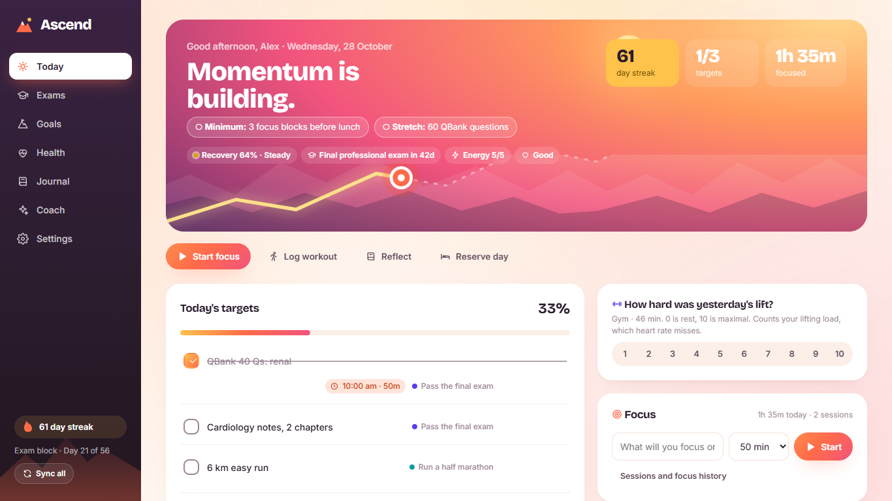
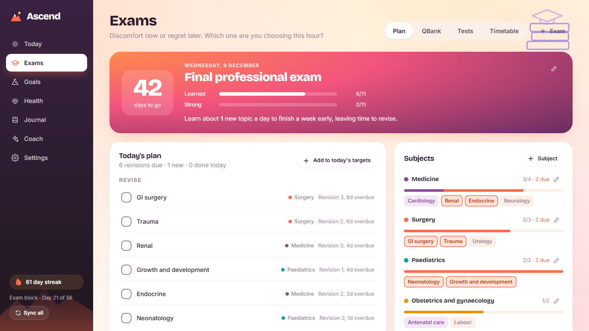
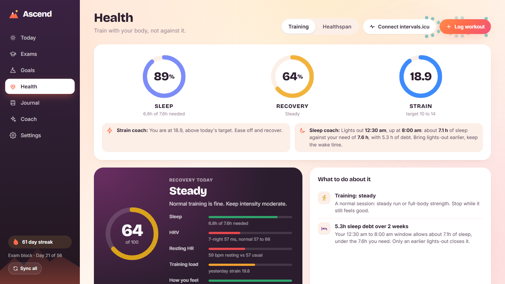
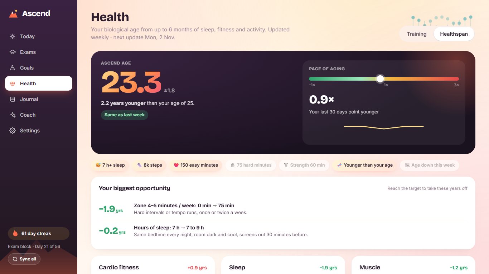
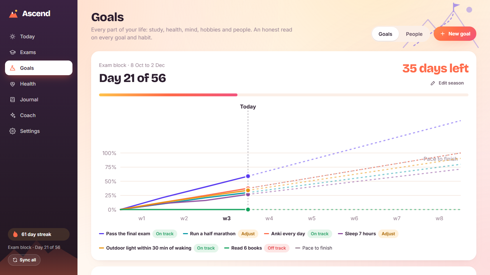
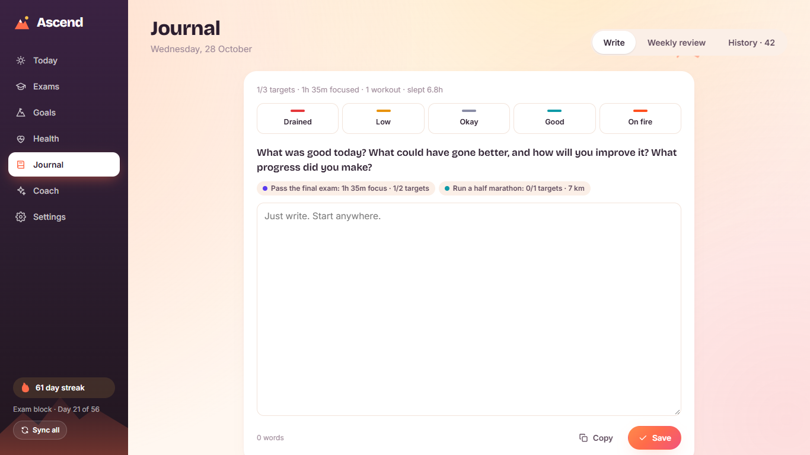

Study hard. Sleep enough. Keep climbing.
Ascend plans your revision, tracks your question banks and mock tests, and reads your sleep, workouts and Anki reviews on its own. You spend 2 minutes a day on it, not 20.

One plan for your exam, your body and your week
Most planners make you do the logging. Ascend fills in what it can see and asks you only for what it can't.
Start every day knowing the one thing that matters
A 2-minute morning check-in sets three targets, a minimum win and a stretch goal. The rest of the day is a focus timer and a checklist.
- If-then reminders at the times you planned, not generic nudges
- Two reserve days a week, so one bad day doesn't break your streak
- A plain focus timer that logs hours to your goals
- Phone lock during focus and at set times and places (Android). Calls always work
Revision that schedules itself to your exam date
Add your subjects and topics. Ascend spaces revisions so they finish before the exam, and tells you each morning what is due.
- Spaced revision that tightens as the exam gets closer
- QBank log by subject and topic, with accuracy trends
- Grand test scores with negative marking, the way your exam scores them
- Everything copied to a Google Sheet, one tab per subject

Sleep, recovery and training from your watch
Ascend reads Health Connect and intervals.icu to work out how much sleep you actually need, how recovered you are and how hard to train today.
- Personal sleep need, sleep debt and sleep stages
- Recovery from your heart rate variability and resting heart rate
- An early warning when your overnight heart rate climbs
- Race predictions and training load from your runs

See how your habits move your biological age
An estimate of your body's age from months of sleep, fitness and activity, with the single change that would help most.
- Pace of aging from the last 30 days
- Your biggest opportunity, in years
- Body composition and lab results in one place

Goals and habits for every part of your life
Set a season of 6 to 12 weeks. Each goal shows whether you are on pace, and habits with a data source tick themselves.
- Study, health, mind, hobbies and people
- Habits that count a single miss as a dip, not a reset
- Weekly priorities linked to the goal they move
- Deadlines of their own, like your exam date
- Friends see the goals you choose, and you can track one together

A short evening journal and a weekly review
The journal already knows what you did today, so you only write what it can't see. Once a week, review the week and set three priorities.
- One prompt a night, with today's numbers filled in
- Weekly review that moves to history once it's done
- Insights that only show patterns that hold up statistically

Connect once, then stop typing
Everything is optional. Connect what you already use and Ascend reads it on every sync.
Health Connect
Sleep and its stages, heart rate, HRV, steps, workouts, weight, body fat and meals from your watch or phone (Android).
intervals.icu
Runs, rides and gym sessions with heart rate zones, training load and fitness trends.
Anki
Your daily review count, read straight from Anki on your laptop. Your Anki habit ticks itself.
Google Drive, Sheets and Calendar
Sync between devices, a revision sheet per subject, and your calendar events on Today.
Notion
Send each journal entry to a Notion page you choose.
Goodreads, Chess.com, Lichess
Books finished and games played count toward your hobby goals.
Free on your laptop and phone
Use one or both. They stay in sync through a Google Drive file that belongs to you, and each tells you when a new version is out.
Windows
The full app, with Anki, reminders and the focus timer in the system tray.
Download for Windows Version 1.9.6 · 88 MB · Windows 10 or 11. Windows may warn that the installer is from an unknown publisher: choose More info, then Run anyway.Android
Adds Health Connect, so sleep, workouts, steps and meals arrive on their own.
Download for Android Version 1.9.6 · 5 MB · Android 8 or newer (Health Connect needs Android 9 or newer). Open the file on your phone and allow your browser to install apps when asked. Not on Google Play yet.Your data never touches our servers. There aren't any.
Ascend has no accounts and no backend. Your data lives on your devices and, if you turn on sync, in a file in your own Google Drive.
Read the privacy policy- No sign-up, no email needed
- No ads, analytics or trackers
- Daily backups on your own device
- Disconnect any service in one tap
- Friends only see the goals you choose to show
Questions
Is Ascend free?
Yes. No subscriptions, no ads and no paid tier.
Do I need a smartwatch?
No. Without one, you enter sleep hours in the morning check-in and log workouts by hand. With a watch that writes to Health Connect, such as Zepp, Samsung or Fitbit, it fills in on its own.
How does sync work?
You copy a small Google Apps Script into your own Google account. Each device syncs to a file in your Google Drive through it. Nobody else, including the developer, can see that file.
Is it only for medical students?
The exam tools, QBank tracker and grand test marking were built for medical exams, but revision planning works for any exam. Goals, habits, health and journal work for anyone.
How is my sleep need worked out?
It starts from 7 or 7.5 hours, then adjusts from your own nights: how long you sleep when you wake without an alarm, and how your heart rate variability recovers after longer nights.
Is there a dark mode?
Yes. In Settings, set Appearance to Dark, Light, or Match this device to follow your laptop or phone.
What if Health Connect and intervals.icu both have my data?
Ascend keeps one copy of each night and each workout. For a run recorded by both, it keeps the intervals.icu version, which has distance and heart rate, and carries over any effort or notes you added.
Is the health advice medical advice?
No. Ascend shows trends from your own data and general training guidance. Talk to a doctor about anything that worries you.